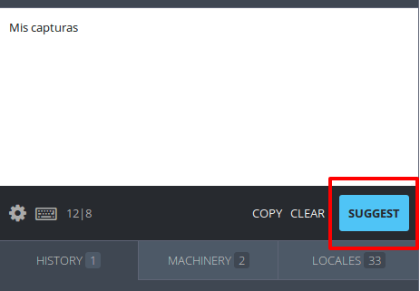
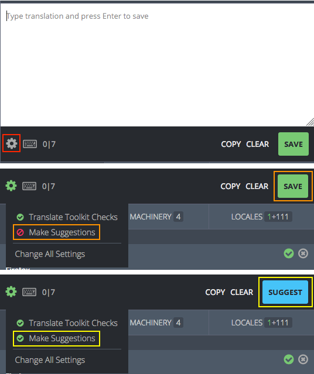
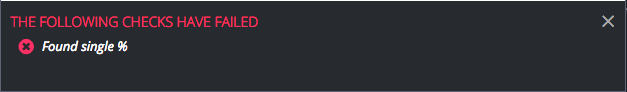
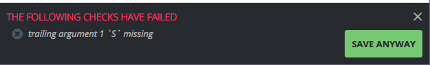
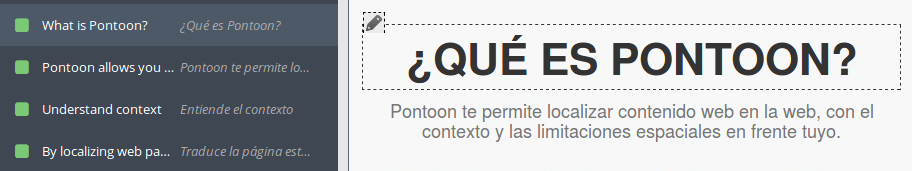
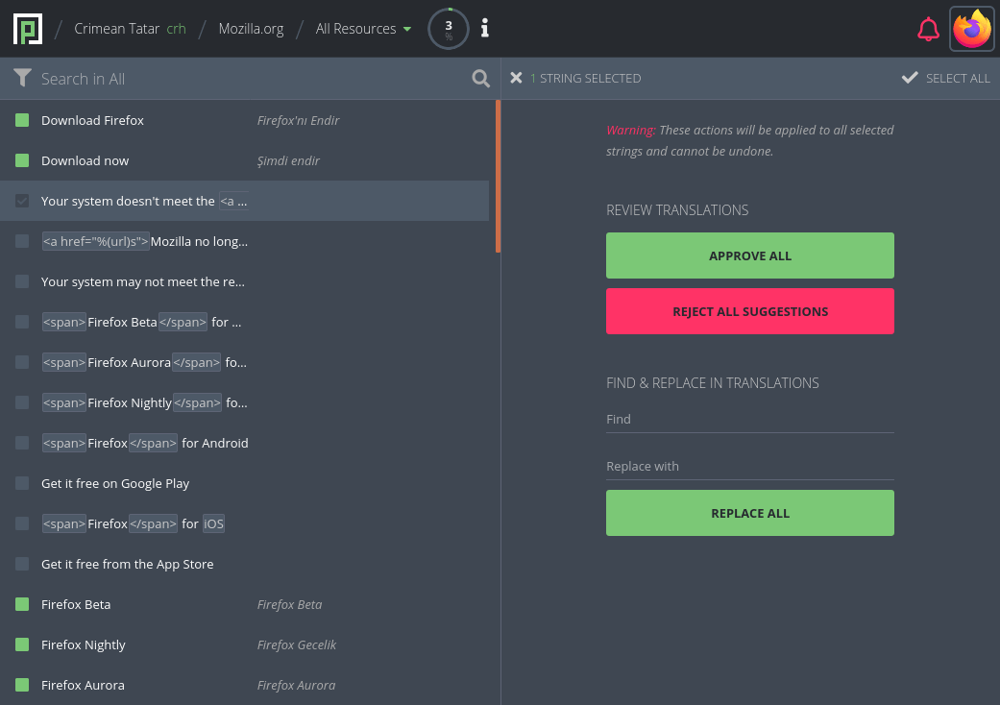
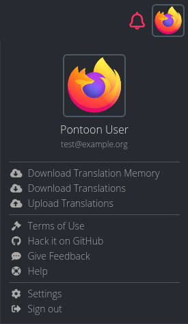

How to translate
- Translating strings
- Quality checks
- Translating using the in-context editor
- Performing batch actions on strings
- Downloading and uploading translations
Translating strings
Four actions can be performed on strings: submit a suggestion, review a suggestion, delete a rejected suggestion, and submit a translation directly. Availability of these actions depends on user’s role.
This document is simplified to demonstrate translation modes in Pontoon. Documentation includes specific pages for learning how to use Pontoon’s interface and translation resources.
Submit a suggestion
When a translator is in Suggest Mode, or doesn’t have permissions to submit translations directly, a blue SUGGEST button will be visible in the lower-right side of the editing space.

To suggest a translation, the translator should simply input the translation to the editing space and click SUGGEST. Once the translator has suggested the translation, the suggestion will appear in the sidebar. In case of multiple suggestions, sidebar will show the most recent one.

A notification will appear in the window, indicating that your translation has been saved.
Note that a suggested translation exists only in the Pontoon database, not in the localized file or translation memories.
Manually switch to suggestion mode
Even if a translator has permissions to add translations directly, submitting suggestions to be reviewed helps ensure quality. To manually switch to Suggestion Mode, click the Settings gear to the lower-left side of the editing space and click the icon to the left of Make Suggestions so that it becomes a green circle. The SUGGEST button should then appear to the lower-right side of the editing space.

A notification will appear in the window, indicating that Make Suggestions has been enabled.
To switch to Review and Direct Translation Mode, go to the settings menu by clicking on the gear and turn off the Make Suggestions option. The green SAVE button should appear to the lower-right side of the editing space.
Review a suggestion
To review a suggestion, search for unreviewed strings in the sidebar.
If the suggested string is an acceptable translation, either click on the SAVE button to the lower-right side of the editing space, or click on the checkmark icon to the right of the string (it becomes green when hovered). This will transform the suggested string into an approved translation, save the string to the database and to the localized file on the next sync operation.
If the suggested string is not an acceptable translation, you can reject it by clicking the cross icon to the right of the string (it becomes red when hovered). After rejecting a suggestion, it’s also possible to delete it completely by clicking the trashcan icon.
Alternatively, you can provide a different suggestion: turn on Make Suggestions in settings. Once the SUGGEST button appears on the lower-right side of the editing space, edit the suggested string as appropriate and click SUGGEST. This will add your translation as a new suggested string in the Pontoon database but will not save the string in the localized file. To see the old and new suggestions, click on the history tab below the editing space. To learn about the history tab and other resources, check the Translation resources documentation.

For more information about using the HISTORY tab, check this document.
Submit a translation directly
Note that it is always best practice to have a translation reviewed by another translator; however, if no reviewer is available, these instructions allow a translator to translate without review.
To submit a translation directly, search for and click on any string in the sidebar.
Ensure that the Make Suggestions option in settings is disabled. Then input the translation to the editing space and click SAVE. This will save your translation directly, without review, to the localized file.
Quality checks
When submitting a translation or suggestion, Pontoon performs automated quality checks. They are meant to help localizers identify issues with punctuation, capitalization, variables, etc. before translations are saved. Failures for these checks are stored in the database, and it’s possible to filter strings with issues from the search bar.
There are two types of quality check failures: errors and warnings.
Errors
Errors cover issues that would cause the string to be ignored, for example removed from Firefox builds or mozilla.org. For this reason, errors cannot be bypassed by localizers - the button to submit a translation is removed and the error needs to be fixed before the translation can be saved.
Examples include exceeding the maximum string length, errors related to variables and placeholders, incorrect number of plural forms in properties files, etc. Errors are denoted with a red circled X.

Errors are detected using the compare-locales library and Pontoon’s internal checks.
Warnings
Warnings, unlike errors, are displayed when it’s not possible to be completely sure that the string contains critical issues. For that reason, warnings can be bypassed by localizers, allowing them to save a translation anyway.
Examples include punctuation, number of sentences, capitalization, etc. Warnings are denoted with a grey circled X.

Warnings are detected using the compare-locales library and Translate Toolkit libraries.
Note: since Translate Toolkit checks may result in many false positives in some scenarios, they can be completely disabled.
Translating using the in-context editor
Note that only websites that have been enabled for in-context editing will display in context in Pontoon.
To translate in context, find the string you want to translate in the in-context view and double click it, or click on the pencil icon on the top-left of the string. Hovering over the string that you want to translate will highlight that string in the sidebar and in the in-context view.

Once you double click a string, the sidebar will display the editing space.

Input your translation or review the suggestion and click SAVE or SUGGEST. Once your translation is saved, the editing space will move to the next string, and that string will be highlighted in the in-context view.
To return to the list of strings in the sidebar, click BACK TO LIST at the top-left of the sidebar.
Interactive website features will work in the in-context view. Some strings that you can see in the sidebar will not be visible in the in-context view until you activate the website feature. In the picture below, the translator has clicked on the hamburger to reveal a drop-down menu.

Performing batch actions on strings
Translators can perform mass actions on batches of strings by clicking on the square to the left of any string in the sidebar. When clicked, the square will show a checkmark and the editing space will show the mass action window.

After selecting a string, it’s possible to hold SHIFT and click on another string to select a range of strings.
At the top-left of the mass action window, the translator can return to the editing space by clicking on the x icon. To the right of the exit icon, the number of strings currently selected is displayed. At the top-right of the mass action window, the translator can select all of the strings in the sidebar.
In the REVIEW TRANSLATIONS section, the translator can approve suggestions or reject suggestions for all selected strings. Upon clicking APPROVE ALL or REMOVE ALL SUGGESTIONS, the label of the button will be replaced with the number of affected translations.
In the REPLACE IN TRANSLATIONS section, the translator can input a series of characters to search for, and a series of characters to use as a replacement. This is a basic find and replace feature that will work only on the selected strings.
Note that mass actions are only available to users with translators rights.
Downloading and uploading translations
Pontoon features the ability to download and upload translations, including translation memories. To access these features, click on your user icon in the top-right section of Pontoon. Note that you must be in the translation workspace for the download/upload options to display in the dropdown menu.

Anyone can download a translation memory (.tmx) and translations, while only translators can upload translations. When downloading translations:
- The resource currently selected is downloaded in its original format, it’s not converted in any way.
- If the project contains more than 10 files, download is performed file-by-file. For larger projects a ZIP of all files is downloaded.
When you upload translations to Pontoon:
- Existing strings with matching translations will be ignored.
- New strings and new translations will be imported and attributed to the user uploading the file.